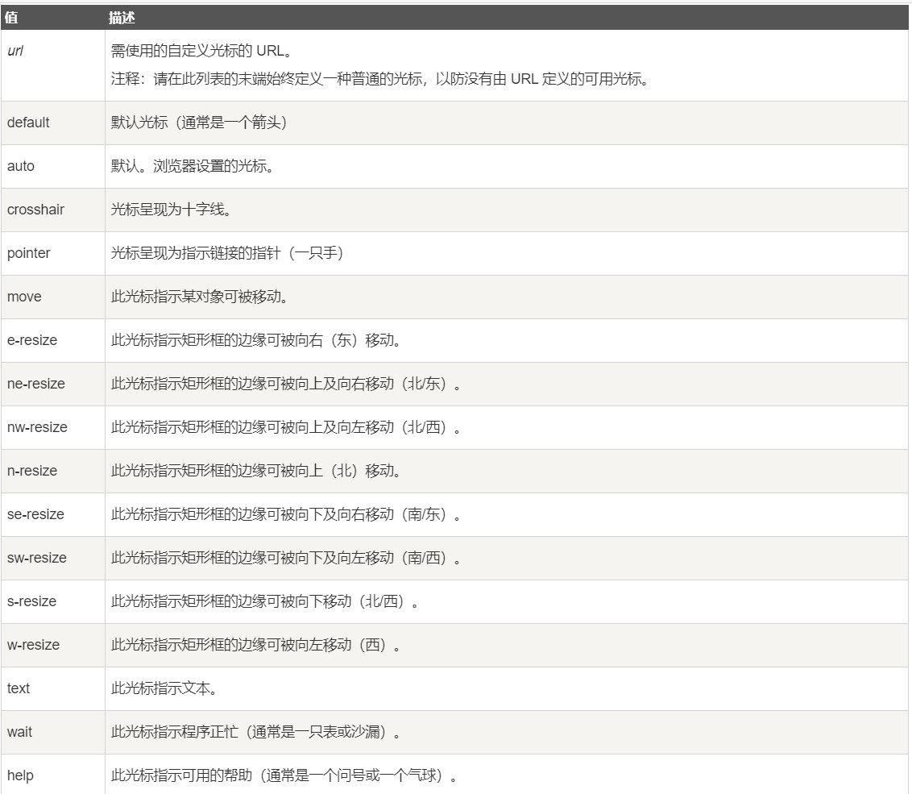

前言
经过一个月的学习，制作简单的网页以及网页之间的互转已经不是问题，同时也做了一个可以实时更新的个人网站，将自己制作的学习笔记html上传，随时随地可以温习。
接下来我主要投入到CSS的样式学习中，将网页设计成自己想要看到的样子，其实之前刚申请域名建立网页时就已经迫不及待提前学习了一部分样式去修饰自己的网页了，所以html结构的学习才会这么拖拉，当然也是如此，我对CSS的学习才会更有兴趣，类似动态交互和音频处理等CSS样式还未设计分毫呢。
7月2日 周四
今日关键词：链接状态、列表样式、元素定位-
链接有四种状态（伪类）：
- a:link------正常状态，没有访问过
- a:visited---已访问过的链接
- a:hover-----鼠标停留在链接上时
- a:active----点击链接的那一刻
- 注意：在CSS定义中，a:hover 必须被置于 a:link 和 a:visited 之后，a:active 必须被置于 a:hover之后，才是有效的
列表样式(ul、ol、li)：
- list-style-type：指定列表标记类型
ul：circle空心圆、disc实心圆点、square正方形、none不设定格式；
ol：roman罗马数字、lapha字母，前缀lower时小写、upper时大写；Cjk-ideographic中文大写；decimal阿拉伯数字；decimal-leading-zero带零的数字；lower-greek希腊字母； - list-style-position：inside和outside属性设置标记类型在border的内外。
- list-style-image：自定义标记图像
list-style-image:url("URL")，兼容性问题可以使用no-repeat的background-image代替：li.class { background-image:url("URL"); background-repeat:no-repeat; background-position:0px 5px; padding-left:14px; }
Position定位：
- static：HTML 元素的默认值，即没有定位，遵循正常的文档流对象。
- absolute：元素的位置相对于最近的已定位父元素，如果元素没有已定位的父元素，那么它的位置相对于<html>（而不像fixed相对窗口定位），使元素的位置与文档流无关，因此不占据空间；
- fixed：元素的位置相对于浏览器窗口是固定位置，如右下角的回顶部；
- relative：移动相对定位元素，但它原本所占的空间不会改变，常被用来作为绝对定位元素的容器块；
- sticky：元素定位表现为在跨越特定阈值前为相对定位，之后为固定定位，如顶部目录；
- z-index：重叠元素用图层属性设置哪部分内容在上层显示，数值大图层在上；
- cursor：设定鼠标停在其定义的内容上时鼠标光标的变化； 
- overflow：定义元素溢出时显示的方式：
- auto：如果内容被修剪，则浏览器会显示滚动条以便查看其余的内容；
- hidde：内容会被修剪；
- visib：默认值，溢出仍然显示；
- scroll：内容会被修剪，但是浏览器会显示滚动条以便查看其余的内容；
- inherit：继承父属性。
{kind=link}
7月3号 周五
今日关键词：盒子模型内属性：边框、轮廓、内外边距，选择器的分组与嵌套。
盒子模型中的属性：
① 边框属性：border，简写顺序为width、style、color，单属性简写顺序为top、right、bottom、left。- border-width：设置边框宽度，此宽度占用空间；
- border-style：定义边框样式，dotted点线、dashed虚线、solid实线、double双边框、groove沟槽、ridge嵴边框、inset嵌入、outset突出；
- border-color：设置边框颜色。
- outline-style：样式与边框属性样式一致
- outline-width：设置轮廓宽度，在文档流中不占用空间。
分组和嵌套选择器：
- p{ }: 为所有 p 元素指定一个样式；
- .marked{ }: 为所有 class="marked" 的元素指定一个样式；
- .marked p{ }: 为所有 class="marked" 元素内的 p 元素指定一个样式；
- p.marked{ }: 为所有 class="marked" 的 p 元素指定一个样式。
display显示和visibility可见性：
- display：inline内联元素，block-块元素，inline-block-内联块元素，表现为同行显示并可修改宽高内外边距等属性一般用于<li>元素，none-隐藏元素且不占用空间
- visibility：hidden-隐藏元素但占用空间，collapse-平时元素的表现与 visibility: hidden 一样，也即其会占用空间。但如果该元素是与 table 相关的元素，例如 table row、table column、table column group、table column group 等，其表现却跟 display: none 一样，也即其占用的空间会释放。
组合选择符：在 CSS3 中包含了四种组合方式----
- 后代选择器：用空格分隔，包含在左边元素内的所有后代元素，包括子元素的子元素；
- 子元素选择器：用 > 分隔，选取某元素的子元素，而子元素的子元素（后两代之后）则不包含其内
- 相邻兄弟选择器：用 + 分隔，选择紧接在指定元素后的元素，且二者父元素相同。
- 普通兄弟选择器：用 ~ 分隔，选取所有指定元素之后的相邻兄弟元素。
7月4号 周六
今日关键词：伪类、下拉菜单、提示框
伪类：用来添加一些选择器的特殊效果，语法：selector:pseudo-class {property:value;}
- first-child 伪类：选择父元素的第一个子元素→p:first-child{...}
- lang 伪类：为不同的语言定义特殊的规则→q:lang(no) {quotes: "~" "~";}，使用q标签的lang属性为no时双引号替换为破折号；
- focus伪类：元素获得焦点时向元素添加特殊的样式→input:focus{...}，点击输入可设置表单样式；
- checked伪类：为所有选中的输入元素设置背景样式→input:checked{...}；
- invalid伪类：为无效、不合法的元素设置样式；
- 伪元素--CSS3使用双冒号区分伪类和伪元素，::before、::after分别定义指定元素前后加上指定内容，内容用content定义。
- 更多伪类查看CSS伪类|菜鸟教程。
下拉菜单和提示框--盒子模型的一种表现形式，具体实现过程如下：
- 定义包含下拉元素和下拉内容的div容器（dropdown）：relative定位，inline-block显示；
- 定义需要显示下拉列表的元素（dropbutton）：可以用button标签；
- 定义下拉列表内容（dropcontent）：默认设置隐藏属性，none显示，absolute定位保证菜单下拉后不会影响后续的文档流移位；
- 定义容器dropdown的hover伪类，使鼠标停在dropdown时dropcontent的显示属性变为可见(block)；
- 可定义下拉列表dropcontent以及其中a标签的基础样式，以及鼠标停在dropdown时dropbutton的样式变化、鼠标停在dropcontent的a标签上时的样式变化；
这里查看下拉列表的CSS骨架 - 使用::after（或者::before）伪元素配合content属性为空，可以为提示工具创建一个小箭头标志，箭头是由三面透明(transparent)的边框，配合绝对定位以及相对移动组成。
媒体类型--指定文件将如何在不同媒体呈现：
- @media规则：允许在同一样式表内为不同媒体设置不同的样式；
- print：用于打印机，可以设定打印时的样式与显示效果不一样；
- screen：用于电脑或者手机显示器，手机和电脑显示不同CSS样式可以设置@media screen and (max-width: 800px)来分辨时小屏显示器还是大屏显示器；
- projection：用于方案展示，比如幻灯片；tv：用于电视机类型设备；
- all：用于所有媒体设备。
属性和值选择器--为设定有某一属性或者设定有某一属性与特定值的所有元素设定样式：
- 属性选择器，如[title]{...;}为所有包含title属性的标签内的元素设定样式，不需要对应值；
- 属性和值选择器①：如[title=alex]{...;}为title="alex"（唯一值）的所有标签内元素设定样式；
- 属性和值选择器②：如[title|=alex]{...;}为title属性的值以alex开头（单独单词）的所有标签内元素设定样式；
- 属性和值选择器③：如[title~=alex]{...;}为title属性的值包含alex（单独单词但不要求顺序）的所有标签内元素设定样式；
- 属性和值选择器④：如[title^=alex]{...;}为title属性的值的前几个字母为alex的所有标签内元素设定样式；
- 属性和值选择器⑤：如[title*=alex]{...;}为title属性的值中包含alex（不需要单独单词）的所有标签内元素设定样式；
- 属性和值选择器④：如[title$=alex]{...;}为title属性的值的后几个字母为alex的所有标签内元素设定样式；
属性选择器应用到表单中，通过input[type=text]等设定输入框和按钮的样式。
7月5号 周日
今日关键词：计数器、JavaScript初始认识、JS输出函数。
今天最大收获时写了第一个JS脚本，实现了目录在点击时的展开与隐藏，主要方法时在用if语句判断是否是手机端的情况下，通过使用element=getElementById("demo")方法对指定元素的事件进行响应，再用element.style.display.match("none")方法来判断当前目录是否隐藏，如果隐藏通过赋值方式(element.style.display = "block")来设置展开，否则赋值为none可实现隐藏。
计数器--对某一属性值设置变量增量计数：
- counter-reset:section x--创建新的计数器或重置计数器；其后的值设置变量名和起始值x（则从x+1开始）；
- counter-increment:section--为section变量计数递增（+1）；
- content:"x""y""..."--插入生成或指定的内容；指定内容需要引号包围，函数生成内容则不需要；
- counter(section)--将section变量的数值添加到元素中；
- counters(section,"string"[,list-style-type])--嵌套计数，遇到同名父子标签则自动嵌套计数，string是项目符之间的分隔符，list-style-type是计数后显示的符号类型，默认是阿拉伯数字；
JavaScript是脚本语言，是插入HTML的轻量级编程语言，基本介绍与功能有：
- 脚本必须位于 <script> 与 </script> 标签之间，可以放在head、body部分，最好统一放一起不影响页面布局，也可以把脚本保存到外部文件中；
- 导入外部脚本文件的方法：<script src="myScript.js"></script>，外部文件不能包含script标签；
- 输出数据：如document.write()，仅能在HTML输出中使用，如果加载完成后使用则会覆盖整个文档；
- 对事件反应：如 onclick="alert('string')" 当点击按钮时会小窗口弹出 string 提示；
- 对事件反应后改变内容、图像、样式等：如 onclick="MyFunction()')" ，MyFunction设定改变方式；
- 判断事件：if语句等判断语句；
输出函数：
- window.alert()：弹出警告框；也可以在一些事件反应的属性值中使用alert()函数
- document.write()：将内容写到 HTML 文档中；
- innerHTML：将内容写入到 HTML 元素中；
- console.log()：写入到浏览器的控制台中；
JavaScript的语法和语言结构：
- 字面量：一般固定值称为字面量，如数字、字符串、表达式、数组[num1,num2,...,numn]、对象{key1:"value1",key2:"value2"}、函数
- 变量：变量用于存储数据值，用关键字var定义；变量是名称，字面量是值；
- 操作符：赋值(=)、算术(+-*/)、位运算、条件、逻辑(== != < >)、比较运算符；
- 字母大小写：JavaScript语言对字母大小写敏感，命名多采用驼峰规则，如lastName；
- 语句：语句用分号隔开是可选的，但同一行内必须用分号隔开；折行则需要私用反斜杠（\）；
- 注释：单行注释用双斜杠（//），多行注释用/*开头、*/结尾；
数据类型--分为值类型与引用数据类型两大类：
- 值类型：包括数字、字符串、布尔、对空(Null)、未定义(undefined)、Symbol（新的原始数据类型，表示独一无二的值）；
- 引用数据类型：array、object、function；
- 定义变量：var var1 = new datatype 或者 var var1 = (...)；即要么用var定义并用new+数据类型声明，或者var定义并直接赋值；
对象、函数与作用域：
- 对象的创建--var object1 = {key:"value"...}，可换行定义；
- 对像属性的访问--object.key 或者object["key"]，将返回key属性对应的值；
- 函数的定义--function myFunction(var1,var2){代码}；
- 作用域--可访问变量的集合，若变量在函数内声明，变量为局部作用域，函数执行完后局部变量会自动销毁；变量在函数外定义，即为全局变量，全局变量有全局作用域: 网页中所有脚本和函数均可使用。
事件--发生在 HTML 元素上的事情，可以是浏览器行为，也可以是用户行为：
- onchange事件：HTML 的元素发生改变时；
- onclick事件：用户点击 HTML 元素时；
- onmouseover：用户鼠标在 HTML 元素上移动时；
- onmouseout：用户从 HTML 元素上移开时；
- onkeydown：用户按下键盘时；
- onload事件：浏览器已经完成页面的加载时。
- 事件触发时的处理：<element event="js program">，即针对某一元素发生某种事件时执行js程序；
7月6号 周一
今日关键词：字符串与属性、比较与逻辑运算符、条件语句、循环语句、错误与异常处理：
字符串--用于存储和处理文本：
- 字符串可以是插入到引号中的任何字符，单引号和双引号均可；
- str.length属性：计算字符串长度；
- 转义字符\：特殊字符可以使用转义字符来转义；\'单引号，\"双引号，\\反斜杠，\n换行，\r回车，\tTab制表符，\b退格符，\f换页符；
- String定义：用new string创建字符串得到的是对象类型；
- constructor属性：返回创建字符串属性的函数；
- prototype属性：允许向对象添加属性和方法；
- 字符串的方法：对字符串进行操作，如str3 = str1.concat(str2) 链连接个字符串并返回给str3；
比较与逻辑运算符：
- 比较运算符：==等于，!=不等于，===绝对等于（值和类型都相等），!===不绝对相等（值和类型有一个不相等，或两个都不相等）;
- 逻辑年算符：&&（与）、||（或）、!（非）；
条件语句--if...else和switch...case：
- if-else：三个条件以上（含三个）时，中间使用else if语句；条件语句中只有一行代码时，可以写在一行企鹅省去花括号；
- switch-case-default：每一次case语句后跟随一个break，最后需要默认语句default，用于所有case语句都不执行时的响应。
循环语句--for和while：
- for循环：for(var innitial;condition;var processing){program;}
- for/in循环：for(x in var){program;}
- while循环：while(condition){program;}条件为true时执行；
- do/while循环：do{program;}while(condition);至少执行一次，do语句中条件变量要变化，否则会进入死循环。
循环中断：break直接跳出循环程序，continue则是终止本次迭代，进入下一次迭代；
正则表达式--由一个字符序列形成的搜索模式，可用于所有文本搜索和文本替换的操作：
- 语法：/正则表达式主体/修饰符(可选)；
- 正则表达式主体：用于检索；
- 修饰符：i-不区分大小写；g-全局匹配（第一个匹配之后不停止）；m-多行匹配；
- 模式：[abc]查找方括号内的任何字符，[0-9]查找任何0-9的数字，(x|y)查找任何以 | 分隔的选项；
- 元字符：\d查找数字，\s查找空白字符，\b匹配单词边界，\uxxxx查找十六进制数xxxx规定的Unicode字符；
- 量词：n+ 匹配任何包含至少一个 n 的字符串，n* 匹配任何包含零个或多个 n 的字符串，n? 匹配任何包含零个或一个 n 的字符串；
- search方法：str1.search(str2)，查找str2子字符串在str1字符串中是否存在并返回子字符串的起始位置，若不存在则返回-1；str2可以是正则表达式
- replace方法：str1.replace(str2,str3)，查找str2子字符串在str1字符串中是否存在并将str2替换为str3（str1中存在str2才替换），str2可以是正则表达式；
- test方法：str1.test(str2)，检测str2字符串是否包含str1，如果字符串中含有匹配的文本，则返回 true，否则返回 false，str1可以是正则表达式；
- exec方法：str1.exec(str2)，用于检索str2字符串是否包含str1，如果有则返回存放匹配结果的数组，否则返回null，str1可以是正则表达式；
错误与异常的处理：
- JavaScript引擎在执行js程序时会因为语法、功能缺乏、服务器或用户输出等的错误而停止工作，并抛出异常，生成错误信息；
- err：生成的错误信息储存在err中，默认形式为（错误类型：错误内容），err内容也可以用throw自定义；
- try语句：对程序进行测试，可用于调试或者对用户的输入进行判断，后者一般会有自定义错误信息，需要用到throw语句，其程序骨架如下：
7月7号 周二
今日关键词：变量提升，严格模式，使用误区，表单验证。
JavaScript中需要注意的点：
- 变量提升：函数声明和变量声明总是会被解释器"提升"到方法体的最顶部，而初始化不会被提升；
- 严格模式：使用字面里"use strict"，使用严格模式后，不能使用未声明的变量，不允许删除变量或对象，不允许删除函数，不允许变量重名，不允许使用八进制，不允许使用转义字符，不允许对只读属性赋值，不允许对一个使用getter方法读取的属性进行赋值，不允许删除一个不允许删除的属性，变量名不能使用"eval"和"arguments"字符串，新增一些保留关键字。
- 常见的使用误区：浮点型数据精确度很难确定，如0.1+0.2=0.30000000000000004，因此在JavaScript中0.1+0.2!=0.3；可用整数乘除法解决大部分问题；
JavaScript表单：
- 常见验证内容：表单数据是否为空发？email地址是否正确？日期是否正确？输入内容是否为数字类型
- 获取表单内容的方法：document.forms["myForm"]["fname"].value，myForm和fname分别是form标签和表单字段标签(如input)name属性的值，对获取的值判断即可作验证；
- 表单自动验证：在表单字段中使用required属性定义该字段必需获取有效信息（直接在开始标签中声明required或者required="required"，在严格模式中只能使用后者定义）；
- 表单字段的其他属性：
disabled定义输入的元素不可用；
max和min分别定义输入元素的最大最小值；
pattern定义输入值的模式；type规定输入元素的类型； - 选择特定属性的伪类选择器：
:disabled选取属性为"disabled"属性的input元素；
:valid和:invalid分别选择有效和无效的input元素；
:required和:optional分别选取有和没有required属性的input元素；
7月8号 周三
今日关键词：API验证。
API（Application Programming Interface）验证：
- 约束验证DOM（Document Object Model）方法：
checkValidity()：如果 input 元素中的数据是合法的返回 true，否则返回 false；
setCustomValidity()：设置 input 元素的 validationMessage 属性，用于自定义错误提示信息的方法。使用 setCustomValidity 设置了自定义提示后，validity.customError 就会变成true，则 checkValidity 总是会返回false。如果要重新判断需要取消自定义提示，方式有：setCustomValidity('') 、setCustomValidity(null)、 setCustomValidity(undefined)； - 约束验证DOM属性：
validity：布尔值属性，返回input输入值是否合法；
validationMessage：浏览器错误提示的信息；
willvalidate：指定input是否需要验证； - validity属性： customError：如果设置了自定义的 validity 信息，则返回true； rangrOverflow：如果元素的值大于设置的最大值，则返回true； rangeUnderflow：如果元素的值小于它的最小值，则返回true； patternMismatch：如果元素的值不匹配它的模式属性，则返回true； typeMismatch：如果元素的值不是预期相匹配的类型，则返回true； stepMismatch：如果元素的值不是按照规定的 step 属性设置，则返回true； valueMissing：如果元素 (required 属性) 没有值，则返回true； tooLong：如果元素的值超过了 maxLength 属性设置的长度，则返回true； valid：如果元素的值是合法的，则返回true；
7月9号 周四
今日关键词：var、let、const，void关键字：
var关键字：用于定义变量：
- var关键字声明的变量不具备块级作用域的特性（如函数内定义的变量），在{}外仍能被访问到；
- var关键字声明的变量在任何地方均可修改；
let关键字：声明变的量仅在let命令所在的代码块有效：
- 在{}内let定义的变量，是局部作用域，在{}外不会能访问；
- 在函数体或代码块外使用let命令，其作用域是全局的；
- 在相同作用域或块级作用域中，let关键字不能修改let、var关键字声明的变量，var关键字也不能重置let关键字声明的变量；
- let命令声明的变量也具有变量提升的特性；
const关键字：定义一个或多个常量：
- 声明时必须初始化，且初始化之后不能修改；
- const 定义常量的值不能通过再赋值修改，也不能再次声明；
- 使用 const 定义的对象或者数组，其实是可变的；
在常量对象中，仅能修改属性的值或者添加属性，而不能对整个常量对象重新赋值；
在常量数组中，可以用索引修改元素或者添加元素，不能对常量数组重新赋值。
void关键字：计算表达式但是不返回值
- 语法结构：
void func()
javascript:void func()
或者：
void(func())
javascript:void(func()) - <a href="javascript:void(0)"></a>：定义死链接，点击不会有任何反应；
- <a href="javascript:void(alert())"></a>：弹出警告框；
- a = void ( b = 5, c = 7 )：a返回undefined，但b,c正常赋值；
7月10号 周五
今日关键词：JavaScript代码规范，JS函数，
JavaScript代码规范--变量和函数的命名规则，空格，缩进的使用规则等：
- 变量与函数名：驼峰法来命名(camelCase)；全局变量额常量为大写
- 空格与运算符：通常运算符 ( = + - * / ) ；前后需要添加空格，方便阅读。
- 代码缩进：使用 4 个空格符号来缩进代码块而不推荐Tab键（不同编辑器 TAB 键的解析不一样）。
- 语句规则：
简单语句：通常以分号作为结束符；
复杂语句：左花括号前添加空格并放在第一行的结尾；右花括号独立放在一行；不要以分号结束一个复杂的声明。 - 对象规则：
将左花括号与类名放在同一行；
冒号与属性值间有个空格；
字符串使用双引号，数字不需要；
最后一个属性-值对后面不要添加逗号；
短的对象代码可以直接写成一行；
将右花括号独立放在一行，并以分号作为结束符号。 - 大小写：HTML对大小写敏感，注意变量与函数名；推荐使用小写文件名。
JavaScript函数的知识点：
- ES5函数中参数会默认设置为undefined；ES6函数可以自带参数；
- arguments对象：包含了函数调用的参数数组；arguments是对象类型，属性为0到n以及callee，n为实参的个属，0到n的值是顺序所对应的实参，而callee的值是函数本身，如arguments.callee(n-1)即为函数内调用本身，常用于迭代；
- this关键字：指向调用函数的当前对象；函数没有被自身的对象调用时 this 的值就会变成全局对象[Object Window]；
- 闭包：能够读取其他函数内部变量的函数；（！！！！！！！！！没搞懂！！！！！！！！！）
文档对象模型：当网页被加载时，浏览器会创建页面的文档对象模型（Document Object Model）。
- 查找 HTML 元素：
通过ID名查找元素：document. getElementById("idname")；
通过标签名查找对象：document. getElementsByTagName("tagname")；
通过类名查找元素：document. getElementsByClassName("classname")。
HTML DOM 的作用：
- 改变HTML：改变 HTML 输出内容：(document.getElementById(id). innerHTML="新的内容")；
改变 HTML 属性：（document.getElementById(id). attribute="新属性值"） - 改变CSS样式：document.getElementById(id).style. property="新样式"；
- 事件响应与处理
- 事件监听，创建事件句柄：addEventListener() 方法
语法结构：element.addEventListener(event, function, useCapture);
event：事件类型，不要加on前缀；
function：函数名，不能加后缀()；
useCapture：参数是个布尔值用于描述事件是冒泡还是捕获，该参数是可选的。 - 移除事件句柄：removeEventListener() 方法，用于移除由 addEventListener() 方法添加的事件句柄。
- IE 8 及更早版本的addEventListener() 方法需要用attachEvent()方法代替，此时事件类型中on前缀是必须的。
7月12号 周日
今日关键词：DOM元素节点、集合HTMLCollection、节点列表NodeList
DOM 元素节点，节点可以是文本也可以是一个标签元素
- x = document.createElement("TagName")：创建名为TagName的元素；
- y = document.createTextNode("xxx")：创建文本节点，内容为xxx；
- x.appendChild(y)：将y节点添加到x元素中，如果有父元素则添加到父元素的结尾；
- element.insertBefore( para, child)：在elememt（父元素）的子元素child之前添加节点para；
- parent.removeChild(child)：移除parent（父元素）内的子元素child；
- parent.replaceChild( node, child)：用node节点替换parent（父元素）内的child节点。
DOM 集合
- getElementsByTagName() 方法返回 HTMLCollection 对象，该对象是包含同一标签名的元素的集合；
- 节点列表和集合中的元素均可以通过索引(以 0 为起始位置)来访问；
- Collection 和NodeList 对象的 length 属性定义了集合中元素的数量；
DOM节点列表
- NodeList 对象是一个从文档中获取的节点列表对象，节点列表类似于一个集合；
- getElementsByTClassName() 方法在部分旧版浏览器中返回节点列表，新版一般返回集合对象；
- 所有浏览器的 childNodes 属性返回的是 NodeList 对象；
- 大部分浏览器的 querySelectorAll() 返回 NodeList 对象。
DOM 集合与 DOM 节点列表的区别：
- HTMLCollection 是 HTML 元素的集合，NodeList 是一个文档节点的集合；
- HTMLCollection 元素可以通过 name，id 或索引来获取，NodeList 只能通过索引来获取；
- 只有 NodeList 对象有包含属性节点和文本节点；
- NodeList 与 HTMLCollection 都与数组对象有点类似，可以使用索引来获取元素；
- NodeList 与 HTMLCollection 都有 length 属性；
- NodeList 与 HTMLCollection 都无法使用数组的方法： valueOf(), pop(), push(), 或 join() 。
7月13号 周一
今日关键词：jQuery简介、语法、选择器
jQuery简介--轻量级的"写的少，做的多"的JavaScript函数库:
- 功能：HTML 元素选取、HTML 元素操作、CSS 操作、HTML 事件函数、JavaScript 特效和动画、HTML DOM 遍历和修改、AJAX、Utilities、jQuery还提供了大量的插件；
- 优势：jQuery 是目前最流行的 JS 框架，而且提供了大量的扩展，兼容于所有主流浏览器；
- jQuery安装：
下载：从 jquery.com 下载 jQuery 库，将下载的文件放在网页的同一目录下，就可以使用jQuery；
网页添加：从 CDN（内容分发网络）中载入 jQuery, 如从 Google、Staticfile CDN、百度、又拍云、新浪、谷歌和微软的服务器 中加载 jQuery； - 引用：通过<script src="jquery-3.5.1.min.js"></script>引用；
jQuery语法：
- 基础语法： $(selector).action()
美元符号定义 jQuery
选择符（selector）"查询"和"查找" HTML 元素
jQuery 的 action() 执行对元素的操作
实例：$("p.test").hide() - 隐藏所有 class="test" 的 <p> 元素 - 文档就绪事件：将所有 jQuery 函数位于一个 document ready 函数中，简写为：
$(function(){
// 开始写 jQuery 代码...
});
防止文档 DOM 在完全加载（就绪）之前运行 jQuery 代码；
jQuery选择器